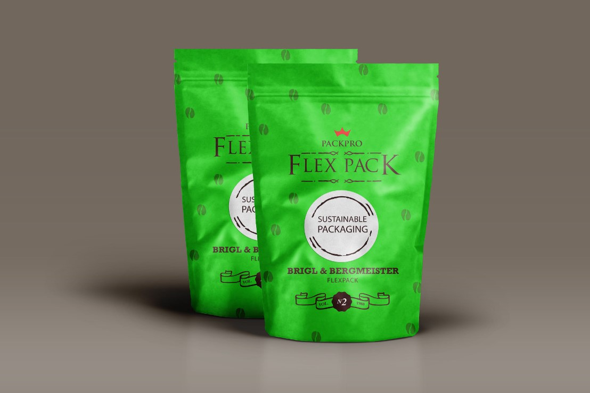
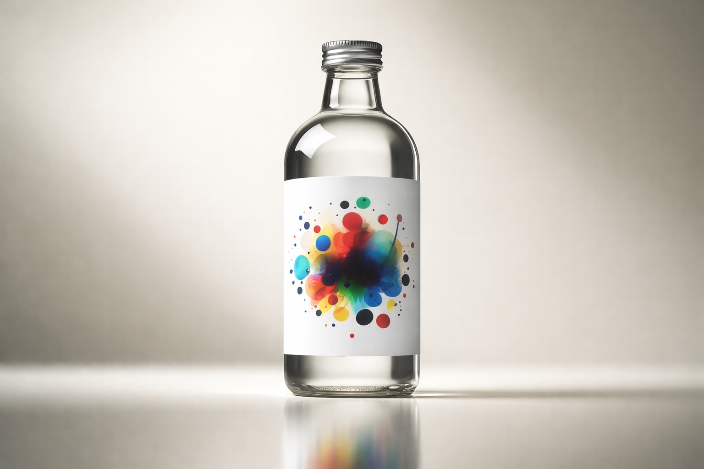
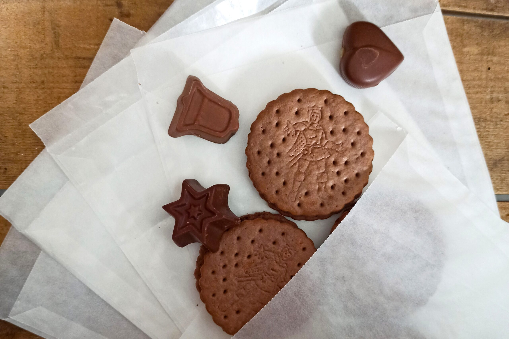
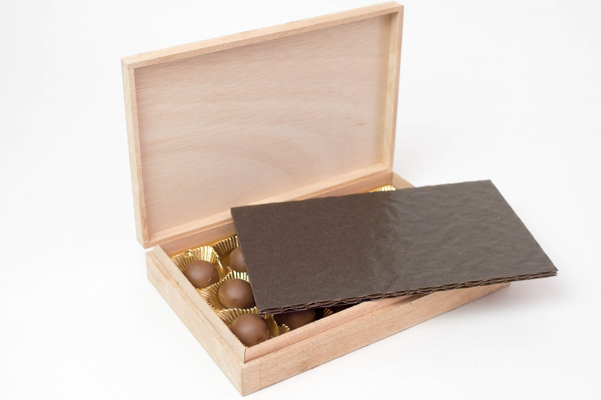
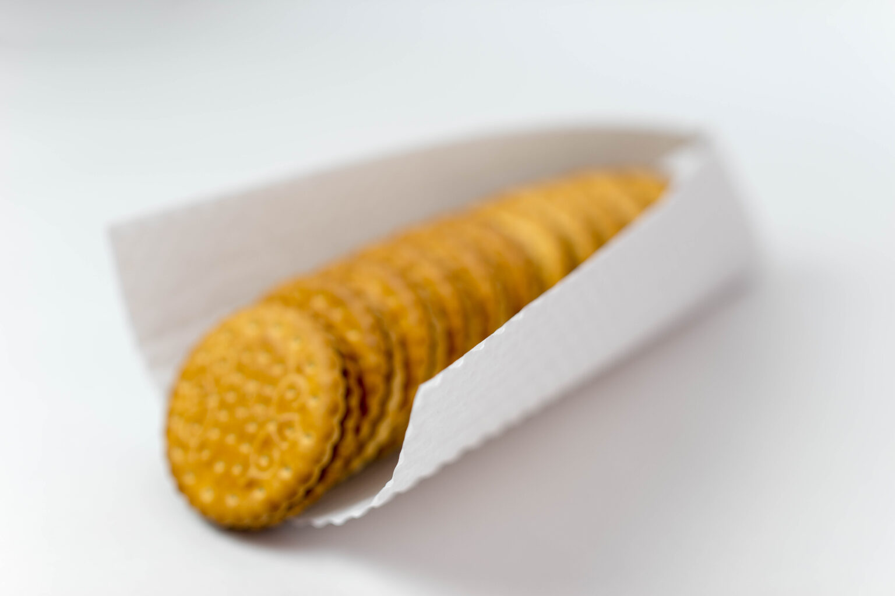
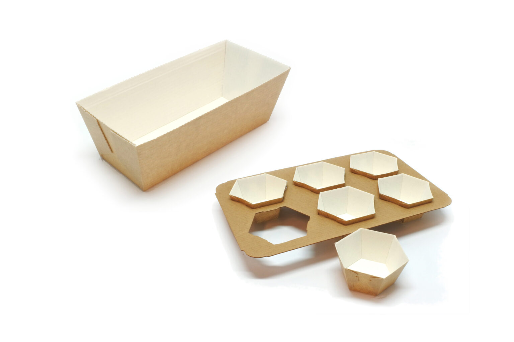
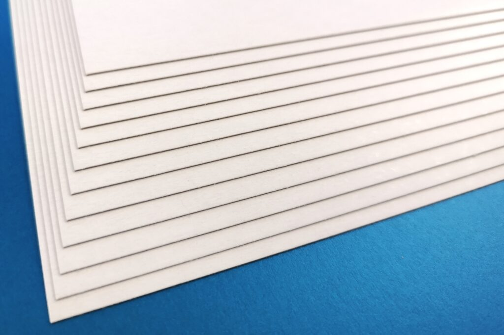
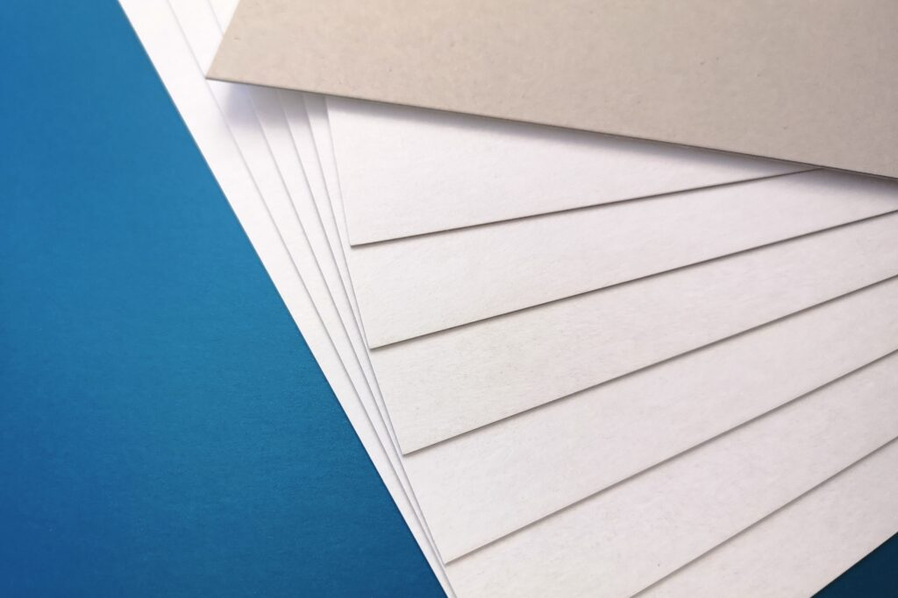
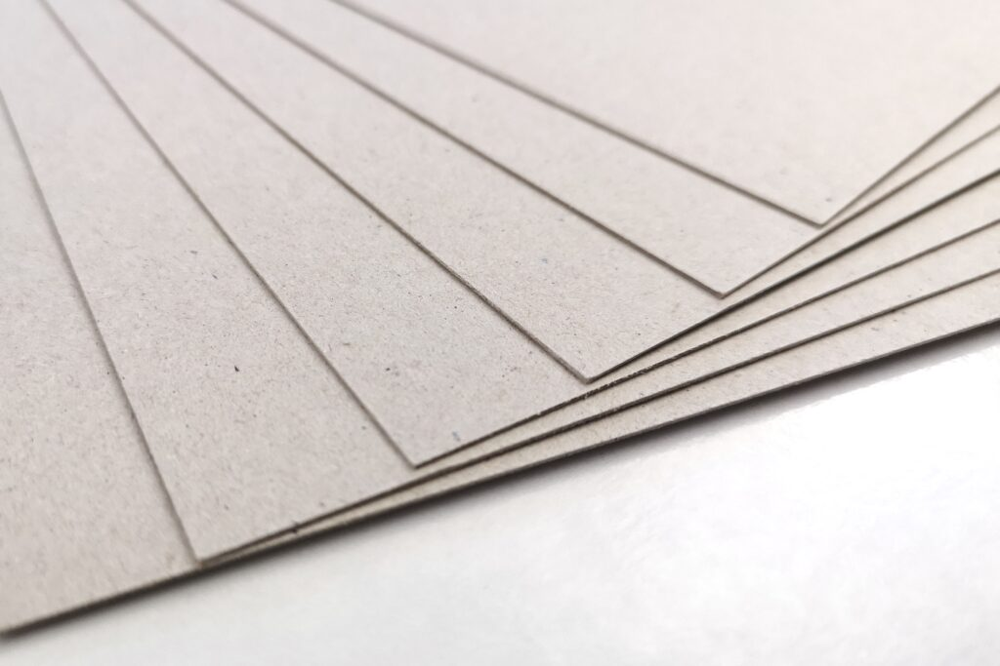
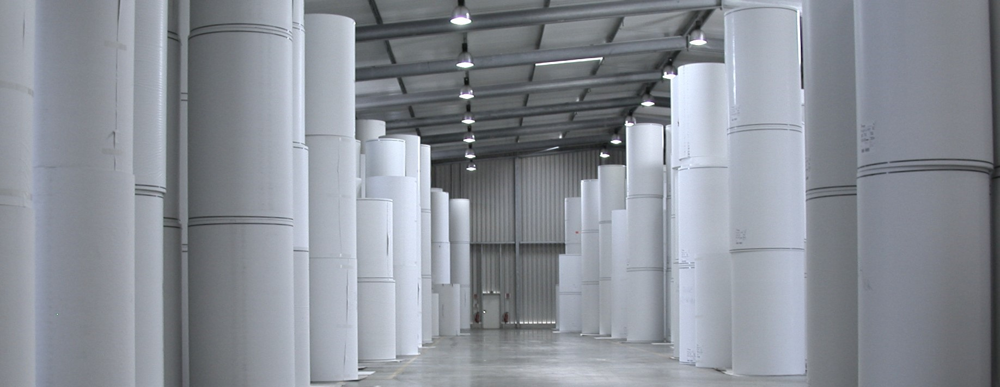

Verpackung
Aus Frischfasern hergestelltes Papier für die Verpackung von Lebensmitteln ist die bevorzugte Verpackung für Premium-Produkte aller Art. Lassen Sie sich inspirieren…

Durch den Einsatz intelligenter und moderner Plattformtechnologie hat Brigl & Bergmeister eine breite Palette von Mehrzweckpapieren entwickelt, die sich durch höchste Effizienz kennzeichnet und besonders gut für den Flexodruck geeignet sind. Mehr Details finden Sie hier oder fragen Sie uns!

Wir sind stolz auch die Etikettenpapiere von Brigl & Bergmeister in der Schweiz vertreiben zu dürfen – eine Übersicht über die Produktepalette finden Sie hier.
Für weitere Auskünfte freuen wir uns von Ihnen zu hören!
Kraftpapier naturbraun ungebleicht für Brotbeutel, Obstsack und alle Verpackungen, die wahre Nachhaltigkeit kommunizieren. Kraftpapier weiss gebleicht wird für die Herstellung von Zucker- und Mehlbeuteln verwendet.
Seit dem Verbot von Kunststoff-Beuteln im Supermarkt in diversen europäischen Ländern, sind Einkaufstaschen aus Kraftpapier eine optisch ansprechende und ökologische Alternative zu Plastikbeuteln.

Pergamin – ein natürlich fettdichtes und leicht transparentes Papier zur Verpackung von Lebensmitteln wie Schokolade oder Backwaren. Dieses Material kombiniert die besten Eigenschaften von Papier, mit seiner Atmungsaktivität und die einer Kunststofffolie, welche geruchsneutral ist. Lieferbar auch mit Slip-Easy Beschichtung für die Herstellung von Pralinen-Kapseln.
Fettdichtes Papier, klassisch auch als Pergamentersatz bezeichnet, besteht aus 100% Zellstoff und wird für die Verpackung von Lebensmitteln verwendet. Die Papierindustrie arbeitet fieberhaft an neuen Barrieren, die Kunststoff-Folien ersetzen werden.

Papierkissen, auch Polsterkissen oder Pralinenpolster genannt, werden hauptsächlich für das Verpacken von liebevoll produzierter und hochwertiger Schokolade eingesetzt. Der Transportschutz ist eine wichtige Aufgabe von Papierkissen. Ein zweiter wichtiger Aspekt für den Einsatz von Papierkissen ist das Marketing: sie sollen Lust machen auf die zu verpackende Schokolade.
Wir liefern die Papierkissen in 3 – 9 Lagen in weiss, braun oder schwarz. Unsere Papierkissen werden endlos produziert und entweder in eckige Abschnitte geschnitten oder in die vom Kunden vorgegebene Form gestanzt. Mit dem Inhouse Flexodruck erzielen wir beeindruckende Ergebnisse und setzen das Papierkissen mit Ihrem Logo in Szene. Fragen Sie uns!

Feinwelle, aus zwei Lagen Kraftpapier hergestellter Wellkarton, für die hochwertige Verpackung von Biscuits und schlagempfindlichen Lebensmitteln. Mit und ohne Fettdichte, in Rolle oder Zuschnitten – wir haben das passende Produkt für Sie!

Backformen Bake-Well® – Beste Backeigenschaften, exzellenter Transportschutz des gebackenen Gutes direkt in der ansprechenden Verpackung für den POS. Eingesetzt für Kuchen, Brot oder Feingebäck ist Bake-Well® aus dem Haus PilloPak die effiziente und ökologische Alternative zu aufwendig zu reinigenden Backformen aus Blech. Geeignet für Backofen und Mikrowelle.

Gestrichener Triplexkarton GT2, für ansprechende Verkaufsverpackungen wird die gestrichene Oberfläche oftmals vielfarbig bedruckt, geprägt, gestanzt. Lieferbar auch mit Migrationsbarriere, Fettbarriere, PE-Beschichtung, 2-seitig identisch gestrichen. Die helle Rückseite betont die Wertigkeit der Verpackung.
Alternativ gibt es den ungestrichenen Triplexkarton UT2, ein weiss gedeckter, ungestrichener Recyclingkarton mit matter Oberfläche. Soll mittels Inkjet-Verfahren ein Strichcode aufgedruckt werden, kann die matte Oberfläche das Verschmieren der Farbe verhindern.

Die hochwertig bedruckbare Oberfläche des gestrichenen Duplexkartons und die graue Rückseite sind die ökonomische Variante für preissensitive Verpackungen.
Auch lieferbar mit PE-Beschichtung, mit gelblicher Rückseite und Wasserdampfsperre.
Für mehr Informationen, fragen Sie uns!

Graukarton – aus 100% Altpapier gefertigt – wird von Industrie und Gewerbe als Sekundärverpackung für Versand- und Schutzfunktionen eingesetzt. Cartonal AG liefert das gesamte Flächengewichtsspektrum in Rollen und Bogen. Wünschen Sie es im Sonderformat, rau, geglättet oder beschichtet? Wir liefern es!

Antirutschkarton – für die Ladungssicherung – mit ein- oder zweiseitiger Beschichtung wird meist bräunlich aber auch beige verwendet. Antirutschbeschichtete Oberflächen sind auch für direkten Lebensmittelkontakt verfügbar.
Nicht fündig geworden?
Fragen Sie uns!